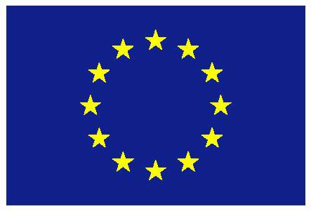

Privacy i
Smart Grid
Privatlivets håndhævelse i fremtidens energisystem med mange personlige data
Hvem er jeg?


smik@eng.au.dk
 @aamikkelsen
@aamikkelsen
 SmartHG
Energy Demand Aware Open Service for
Smart Grid Intelligent Automation
- Konsortium: 11 partner fra 6 forskellige lande

SmartHG
Målsætning:
- At minimere energiforbrug og omkostninger i det enkelte hjem
- At hjælpe netværksoperatører (distributører af el) med at optimere driften af elnettet
Vores løsning indbefatter:
- Software til forbrugerne: Mindre forbrug, "optimeret" forbrug
- Software til netværksoperatørerne: Analyse af forbrug, styring af elnettet
- Åbent system: Generer nyt market
Det STORE spørgsmål
Hvordan bygger vi et system der tillader at distributionssystemoperatøren får indsigt i hjemmets elforbrug uden at privatlivet af brugerne kompromitteres?
Afgrænsning

Afgrænsning

Der er stigende fokus på beskyttelse af personlige data
Men ...

Hvorfor er beskyttelsen af privatlivet vigtigt i smart grid sammenhæng?
Effektbelastningen i en lejlighed

Reference: Fan et al. (2013)
Hvem har interesse i disse forbrugsdata?
- System operatørerne
- Indbrudstyve
- "Nysgerrige naboer"
- Forsikringsselskaber
- Google... (eller Apple)
- ...
Arkitekturer til datahåndtering
Model 1: Tingene's Internet
Model 2: Privat sky

Model 3: Hybrid

Opsummering
- Behov er forskelligt - også et i Smart Grid
- Data skabes til evighed